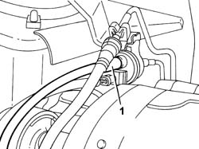
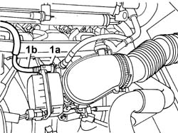
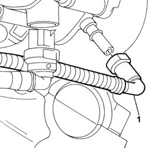
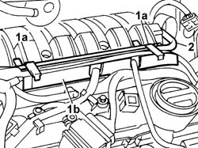

1080E68 PIPE FROM CUT OUT SOLENOID VALVE TO THROTTLE CASING - R.R.
- Path
- Procedures > 10 ENGINE > 1080 EXHAUST EMISSION CONTROL SYSTEM > 1080E EVAPORATION CONTROL SYSTEM > 1080E68 PIPE FROM CUT OUT SOLENOID VALVE TO THROTTLE CASING - R.R.
- Kind
- repair procedure (removal / refitting; the operation number is the code)
- Applies to
- engines: 2.0 16v, 3.0 24V V6; all production periods
- Interactive page
- https://sloeber94.github.io/elrnDB-fUlss/en/#/179007116
Applies to: engines: 2.0 16v; all production periods
 Removing
Removing
 Refitting
Refitting1. Release the pipe from the cut out solenoid valve.

Applies to: engines: 2.0 16v; all production periods
1. Disconnect the rapid connector (1a) from the throttle casing, release the pipe (1b) from the fastenings and remove it.

Applies to: engines: 2.0 16v; all production periods
Refitting
Removing- Fit the pipe in place and renew the fastenings.
- Connect the rapid connector to the throttle casing.
- Fit the pipe on the cut out solenoid valve.
Applies to: engines: 3.0 24V V6; all production periods
Removing
Refitting- Disconnect the negative battery terminal.
Description | Connector | |
|---|---|---|
. | Battery | A001B |
See in Op. 5010B18 Climate control unit AIR INTAKE - R.R.528817
See in Op. 5050B34 WIPER ARM(S) for front windscreen wiper complete with blade - R.R.528951
See in Op. 7210E22 WINDSCREEN BASE TRIM - R and R814429
See in Op. 1088B10
See in Op. 1016A42 IGNITION COIL COVER on left cylinder head - R.R.814436
- Release the fuel vapour cut out solenoid valve from the mounting bracket.
1. Disconnect the fuel vapour recovery pipe from the cut out solenoid valve.
Applies to: all engines; all production periods
1. Disconnect the rapid connector for the fuel vapour recovery pipe from the throttle casing and remove it from the vehicle.

Applies to: engines: 3.0 24V V6; all production periods
1. Remove the clips (1a) from the retaining duct (1b).
2. Release the pipe and extract it from the retaining duct.

Applies to: engines: 3.0 24V V6; all production periods
Refitting
Removing- Connect the rapid connector for the fuel vapour recovery pipe to the throttle casing.
- Connect the fuel vapour recovery pipe to the cut out solenoid valve.
- Position the fuel vapour cut out solenoid valve on the mounting bracket.
- Position the fuel vapour recovery pipe between the cut out valve and the throttle casing in the duct and attach the retaining clips
See in Op. 1016A42 IGNITION COIL COVER on left cylinder head - R.R.814436
See in Op. 1088B10
See in Op. 7210E22 WINDSCREEN BASE TRIM - R and R814429
See in Op. 5050B34 WIPER ARM(S) for front windscreen wiper complete with blade - R.R.528951
See in Op. 5010B18 Climate control unit AIR INTAKE - R.R.528817
- Connect the negative battery terminal.
Description | Connector | |
|---|---|---|
. | Battery | A001B |
See in Op. 0010T21 ENGINE COOLANT - Check density and top up if necessary528255